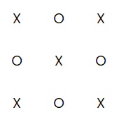

Exercise 10.7
This is Exercise 10.7, lecture on traversing DOM with Javascript, used in the course IDATA2301 Web technologies at NTNU, campus Aalesund.
Purpose
The purpose of the exercise is to learn how you can select more than one element and traverse the children.
Instructions
- Create an HTML document with a 3x3 grid container. An opportunity to remember how CSS grids work ;).
- Put 9 div elements inside it.
-
For even div elements add
class="even"(div number 2, 4, …, 8), for odd elements (div number 1, 3, …, 9) addclass="odd". -
Write a Javascript code (execute it when the page is loaded) which
sets text to "X" for all odd elements (those with
class="odd") and sets text to "O" for all elements withclass="even". - Extra challenge: find out how you can do the same even if you don't assign any classes to the nine divs. I.e., you can access odd and even child elements separately, with specific selectors. Hint: how would you access those in CSS?
It should look something like this in the end:
Solution
You can find a solution here.